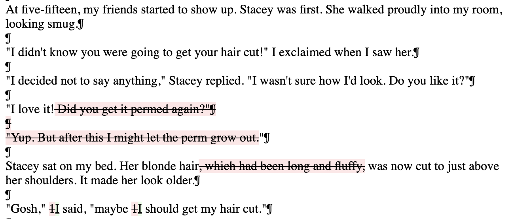
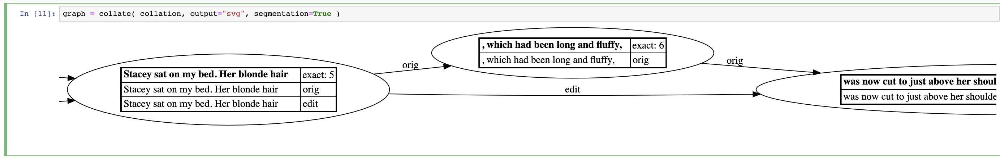

DSC #3: The Truth About Digital Humanities Collaborations (and Textual Variants!)¶
by Maria Sachiko Cecire, January 10, 2020

I read the email thread again. Then one more time. “Oh my gosh,” I whispered. “What do I say?”

The first message in the thread, titled “Amazing discovery for our next volume!” was from Quinn, who’d had the great idea to start the Data-Sitters Club in the first place. The DSC is a group of scholars that are creating a digital humanities guide to computational text analysis by building and analyzing a corpus of the Baby-Sitters Club books, and I was the last member to join before we launched a few months ago (there’s more about all the members of the gang and our history in Chapter 2). Quinn asked me to be part of the DSC because of my background in children’s literature and childhood studies, and because of my digital humanities-friendliness as the director of the Center for Experimental Humanities at Bard College. But not particularly for my data mining experience, because it’s not something I usually do! Everyone in the DSC was so nice, and I already knew some of the other members from before, but already I was feeling out of place.

Children’s publishing has a long history of revising texts to keep up with changing social norms, especially since books for kids have always been seen as instructional (even didactic and, some claim, “civilizing”), as well as entertaining. And since children’s books are overwhelmingly written, published, and bought by adults – most of whom care a LOT about what kids are reading and thinking about – there have always been adult eyeballs on children’s literature and calls to take out or change “inappropriate” material. One old-school version of this is the differences between the first edition of the Brothers Grimm’s Children’s and Household Tales in 1812 and the “definitive” version in 1857, where the stories were dramatically edited to make them more “suitable” (less violent, sexual, and pagan) for children. They did this even though the original project was supposed to be a folk record of deep-rooted national tales, not necessarily an influence on modern youth! But from the late eighteenth century on, if you say any cultural object is “for children,” it automatically sets off all kinds of appropriateness radars.

Another children’s lit classic that has gotten this treatment is Roald Dahl’s Charlie and the Chocolate Factory; there were some (honestly, reaaaally necessary) revisions in the 1970s to deal with the fact that the Oompa Loompas were described in the ‘60s original as “amiable black pygmies” from “the very deepest and darkest part of the African jungle where no white man had been before.” Ew. (More on these kind of changes at children’s literature scholar Phil Nel’s blog, from which the Oompa Loompa illustrations were taken.)
But the changes Quinn was seeing didn’t seem to be at the level of social lessons (unless you mean the lesson that the perm craze is better off left in the past) – they were more about making the books, as the kids say, “relatable” to modern readers. That felt pretty normal given what I knew about children’s literature too. Books for young people have been commercial products basically since they became A Thing in the mid- to late eighteenth century. Ever heard of the prestigious Newbery Medal for children’s literature? John Newbery, the “Father of Children’s Literature,” was the English publisher and merchant who got the whole shebang started…by printing and selling books. Children’s presses are always looking for ways to make the same books more exciting for new markets – this results in things like the Americanizations when Harry Potter and the Philosopher’s Stone was first sold as Harry Potter and the Sorcerer’s Stone in the US (they stopped doing this after Book 1 though, because everyone knows a Weasley jumper is way cozier than a Weasley sweater). Children’s publishing also relies a lot more on nostalgia sales than adult books do, since all those grown-up buyers of children’s literature often want to pass down their old faves to the next generation. So it’s not uncommon for presses to re-release classics with hipper cover art and contemporary updates to the text itself. This happened with bestselling British author Enid Blyton’s books in 2010 and (a later google search revealed)…The Baby-Sitters Club books in the same year. And most of the changes the team was discussing were the kinds of ones the BSC publisher, Scholastic, had openly announced they planned to make! (Interestingly, they reversed the changes to the Blyton books in 2016 due to lack of interest; and we found that the BSC changes petered out after the first 10 volumes or so.)
So there I was, a font of possibly unwanted information. I didn’t want to rain on everyone’s parade: one of the awesome things about computational text analysis is supposed to be its ability to reveal information that humans wouldn’t be able to detect on their own or, in some cases, even think to ask about. And everyone else was fired up about what the digital comparisons had shown. So it felt like a big party pooper move – and not an awesome collaborator move – to respond by saying that the changes were not really a major discovery after all.
Meanwhile, after a ton of techie back-and-forth over the last few weeks that I couldn’t add much to, and as the least text-analysis-savvy member of the DSC, I was already feeling like my input wasn’t as valuable as other members of the team. I mean, the Center and program I founded at Bard is called “Experimental Humanities” instead of “Digital Humanities” because our crew tends to be more interested in the questions we ask, people we work with, and the methods we use in the humanities than anything digital per se (though digital projects do happen!). Was I about to be too much “yack” in a moment of excited “hack”? Maybe I had missed some key element of what make these findings thrilling because of my lack of experience with corpus-building? Shouldn’t feminist collaboration always be supportive instead of contradicting, like a scholarly version of the “yes, and” game? I sat there, doubting myself.
So what did I say?
In the end I kind of split the difference. In my email response I affirmed everyone’s enthusiasm and thanked Quinn for her work. Then I gave some (though not all) of the historical background I just talked about and ended with this:
From: Maria Sachiko Cecire
To: Quinn Dombrowski, Katia Bowers, Anouk Lang, Roopika Risam
Date: 11/7/19 6:39 PM
Subject: Re: Amazing discovery for our next volume![…] Anyway, I thought I’d throw this history into the mix because a) I’m a nerd, b) it really does ask us to think about which corpus we’d want to use and why […] And apologies if this is all TMI, but I thought I’d mention these thoughts since Quinn had said it could be helpful to have a children’s lit perspective to flag what computational findings might read as novel and what might be known already in the field, so that we can present our findings accordingly!
I definitely buried the lede, hoping that the rest of the DSC would figure out that I was trying to gently say that finding content changes between original and re-released children’s books isn’t necessarily a big deal in and of itself – even if it probably feels that way when your computational analysis starts spitting out discrepancies. To me, presenting these differences as a major finding seemed like we’d be recreating exactly the kind of blind spot that people have criticized digital humanities projects for: claiming something that’s already known in the field as exciting new knowledge just because it’s been found digitally. But in a pretty un-feminist turn, I tried to soften this (already hard-to-parse) position by calling myself a nerd rather than an expert, apologizing for even sharing my expertise, and justifying why I was sharing it at all. It my way of trying to make the collaboration run more smoothly, but in retrospect it was not my finest moment.
It wasn’t until our call a few weeks later that the whole truth came out: I have way less of a filter in person! And at first it was kind of awkward, probably because the group didn’t understand why I was the only person unsure about the value of diving into these changes as a whole, dedicated DSC post. But before long, people got interested in the awesome tradition of theorizing power relations in childhood studies and its implications for children’s literature, and I was thinking about how the process itself of finding these differences might be useful to others. The rest of the DSC also asked questions about my own anxious experience of feeling like the least “digital” humanist in the group, and we agreed that it would be nice to make that part of the post, too. After a good talk (Katia described some of it at the end of her last post), we turned our plans for DSC #3 into what it is now: a post about collaboration and disciplinary knowledge in digital humanities projects, with a bonus section about corpus comparison.
As most digital humanities people now agree, there is no meaningful “hacking” without deep, well-theorized “yacking” – but too often, collaborators in digital humanities projects can feel less relevant if they aren’t the ones writing code. At the same time, the labor that goes into preparing and running a digital project (from building the corpus to cleaning data to running text comparisons) should be valued and honored as intellectual work too. It’s important for digital humanities teams to foreground this “both-and” (“yes, and”?) approach, from forming research groups that meaningfully include both digital and disciplinary experts to making sure that each member knows their contributions are essential to the project. This can be especially tough to do when your team is spread around the world, like ours is, and only communicates by email and occasional calls. But it’s worth the time and effort it takes to talk through the conflicts, ambiguities, and surprising overlaps.
This isn’t the end for our discrepancy data – just because having differences between original and re-released books is not that uncommon in children’s literature doesn’t mean that the differences can’t tell us interesting things about the books and their shifting cultural contexts. Check out this sample of differences from the great spreadsheet Quinn made!
There might be some really interesting findings as we dig in deeper, and computational text analysis could be one way to help us understand these changes more. We are still figuring that out, as well as how we are going to handle the enormous amount of data that this corpus contains: what to pursue more deeply, and what to leave aside in favor of delving into other discoveries. But we know for sure that asking our questions in conversation with the knowledge of both specific disciplines and the digital humanities is one important place to start!
For now, I’ll leave you with Quinn’s notes on how to computationally work out differences between two versions of a text.

Dear Reader¶
Dear Reader,
In DSC #3, Maria gave us a reality check about what initially seemed like a remarkable discovery: differences between the (presumably older) versions of the corpus I initially found online, and the recent re-releases that we scanned and OCR’d. While these updates – ranging from punctuation conventions, to inflation, to fashion trends – are unsurprising in children’s literature, such changes may point to changes of greater interest in other kinds of texts.
Identifying differences between two versions of a text is a problem just asking for computational methods. You don’t have to identify as a digital humanist to not want to spend time comparing texts manually. Text collation is one most intuitively understandable computational text analysis methods, at least at first glance: “how are these texts different?” For that reason, it’s been an appealing target for digital humanities tool development, to make it easier for anyone to do text collation without having to learn how to write code. Text collation also has applications in commercial software. Have you ever looked at the version history for a Google Doc? It uses text collation to identify additions and deletions: that’s easier than monitoring every change as you make it.
There’s a few different ways to do it – and more that I haven’t included here – but this should be enough to get you started with text collation.
What I actually used: Diff Match Patch
As mentioned in DSC #2: Katia and the Phantom Corpus, what I used to find the differences in the text was Diff Match Patch, the code behind the Google Docs version history. I used the Diff Demo linked from the GitHub repo, using the default settings, to compile a Google Sheet full of changes for Maria to take a look at.
Why that tool? Well, our corpus wasn’t that big – and I suspected that the relevant subset of the corpus would be much smaller. (It didn’t seem likely that the publisher went through all the books to make content edits when the books were re-released as e-books.) The Diff Demo does the comparison really fast (unlike certain other options described below). Because I expected only a few books would show traces of these edits, I suspected it’d be all-around faster and easier to manually copy and paste dirty and clean corpus texts for comparison, review the differences with my own eyeballs, and then copy and paste relevant differences (i.e. ones not resulting from OCR errors) into a Google Sheet. Honestly, even if I thought there would be a lot of books with these changes, I’d probably start with the Diff Demo to first get a sense of what the changes were, how many there tended to be per book, etc., before moving on to trying to write code to scale up the process beyond what I could reasonably do myself.

When I first started doing the collation this way, there were a lot of “false alarms”: things flagged as differences that were entirely typographical. Curly instead of straight quotes and apostrophes. Ellipses expressed through a single character instead of three periods. That kind of thing. To minimize the number of things that would catch my eye as I skimmed the results, I did a bit of pre-processing, replacing the quotes and ellipses so they’d be consistent, just using find-and-replace in a plain text editor.
One handy thing about the Diff Demo is that if you copy the output and paste it into Microsoft Word, the changes will show up formatted as you’d expect from Word’s built-in Track Changes.

What I tried: Juxta
When I first told the other data-sitters that there were changes in the text, the tool that immediately leaped to mind for a couple of us was Juxta. Juxta made a big splash in the late 2000’s – initially as an installable Java app, and then as a web-based version, Juxta Commons. Juxta Commons is still “in beta” about a decade later, but has detailed documentation, still works, and you can even create new accounts (as I discovered, since my old account is associated with an email from two jobs ago).
A web-based digital humanities tool that still works a decade later, even as the associated blog is six years out-of-date, is nothing short of a miracle. There’s just one catch:
Juxta
…
…
Commons
…
…
…
runs
…
…
…
…
agonizingly
…
…
…
…
…
slowly.
I was certain that it wasn’t working at all, and I gave up and went to bed. The next morning, I was about to close the browser tab with Juxta Commons open when I saw – that it had worked! What’s more, it was “smarter” about its output than the Diff Demo, not flagging the typographical differences, even though I hadn’t done any pre-processing on the source text files.
The only problem is that if you need to make any changes (like changing which source is used as baseline for deviation), you have to wait all over again.
For better performance, you could try running the Juxta Commons source code on your own laptop, but it’s probably more straightforward to install the desktop software. I found it a little counterintuitive – though to be fair, I’m the type who usually leaps into software without reading the documentation first. The user manual is actually helpful for working through the process of comparing texts.

Do It With Code: CollateX
Back around 2010, Juxta had a “competitor” of sorts, CollateX. CollateX was another piece of Java software, developed in the EU as part of Interedition, whereas Juxta was developed in the US by NINES. For a while, choosing between Juxta and CollateX was something of a toss-up, but they’ve since gone in different directions. Juxta invested in the web-based Juxta Commons, whereas CollateX developed into a Python package. What’s more, there’s even materials (including Jupyter notebooks) available for how to use CollateX, from a workshop at DH 2015. (If you’re not familiar with Jupyter notebooks, check them out – they’re especially useful if you’re new to coding. I co-wrote a tutorial on Jupyter notebooks on Programming Historian.)
Both the CollateX and the Juxta crowds are Text Encoding Initiative (TEI)-friendly, and both tools have special options if your source texts are encoded using the TEI conventions. (I have feelings about TEI, but I’ll save them for a future Data-Sitters Club piece.) What we have for our corpus is just plain text.
The Jupyter notebooks from the DH 2015 workshop are really the place to start if you want to use CollateX with Python. One thing I soon discovered, though, is that CollateX doesn’t seem to be the right tool when collating things of the length of a “Baby-Sitters Club” novel. My poor laptop whirred angrily at me for an hour, before quieting down without actually completing the collation.
Given the much smaller chunk of a few paragraphs (the ones used for the screenshots above), it performed great, and has a couple of nice visualizations, including color-coded lines that split out textual differences, and a graph visualization.


Text collation is a relatively easy way to answer some kinds of questions about the editorial history of a text. Whether you’d rather write code, paste things into a browser, or install really old Java software, there are multiple options for exploring text collation. Give it a try – but always remember to check with a disciplinary expert before you get too excited!
Happy analyzing,

Suggested Citation¶
Cecire, Maria Sachiko. “DSC #3: The Truth About Digital Humanities Collaboration.” The Data-Sitters Club. January 10, 2020. https://datasittersclub.github.io/site/dsc3.html.